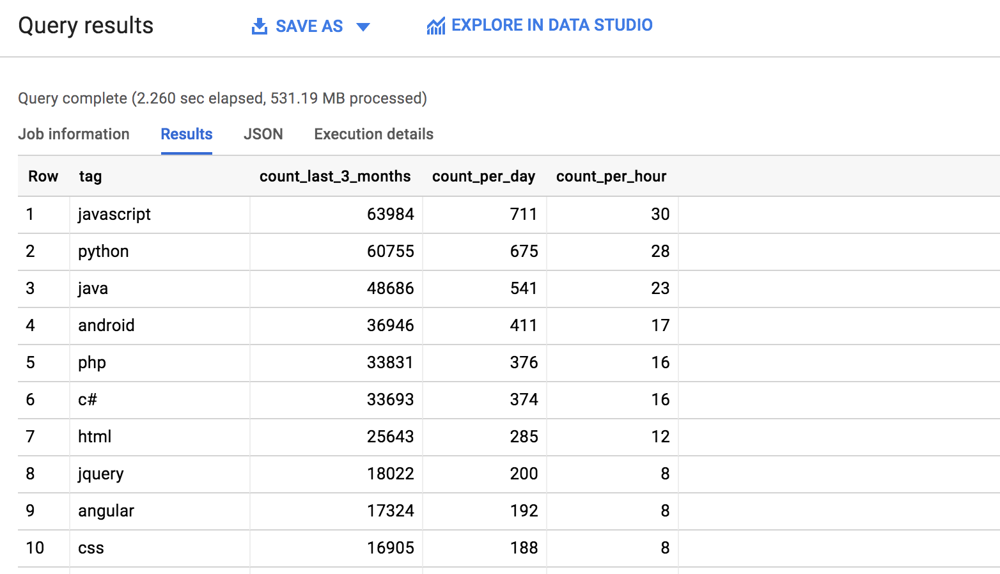

class: bg-title bg --- layout: false ### Who am I? * John Wang - aka "Grokify" * Head of PM for RingCentral Developer Program * Top 50 Contributor (of 900+) to OpenAPI Generator * Built an Alexa 12k website -- * Recent focus on Product Mgmt, Product Marketing * Weekend Warrior -- * 6,785 Stack Overflow reputation - Top 0.01% * 2,000+ reputation in 28 days of posting --- class: middle, center, inverse ### Head a Dev Program? ### Need a Stack Overflow Tag! --- class: bg-reputation bg ### 28 Days of Posts --- ### Agenda * Why 2000? * 7 Steps to Success 1. Choose Identity 2. Choose Approach 3. Choose Tags 4. Monitor Questions 5. Post Answers 6. Refine Answers 7. Humility / General Niceness * Results --- class: center, middle, inverse # Why 2000? --- class: bg-awesome bg --- ### What You Get * **edit questions and answers @ 2,000** * *create tags @ 1,500* * create gallery chat rooms @ 1,000 * access review queues @ 500 * view close votes @ 250 * reduce ads @ 200 * vote down @ 125 * edit community wiki, create chat rooms @ 100 * set bounties @ 75 * comment everywhere @ 50 * talk in chat @ 20 * flag posts, vote up @ 15 * post more links, answer protected questions, create wiki posts @ 10 * participate in meta @ 5 --- class: bg-happiness bg ## What You Really Get --- ### 7 Steps to Success <br /><br /> <center> <img src="images/stack-overflow_7-steps_linear-legend.svg" style="height:120%;width:auto" /> </center> --- class: center, middle, inverse ## Step 1 ## Choose Your Identity --- class: bg-embarassed bg --- class: bg-superheroes bg ### Have a Secret Identity --- ### Your Identity * Hide your identity to gain confidence * You can reveal yourself any time * Users are assigned numeric ids, not usernames * Usernames can be changed at any time * Display names can be chnaged at any time * No one cares if you are anonymous --- class: center, middle, inverse ## Steps 2 and 3 ## Choose Your Strategy ### Reputation + Tags --- class: bg-focus bg --- ### Reputation Overview * Questions * 5 for upvote * 2 for accepting answer * Answers * 15 for accept * 10 for upvote * 25-500 for bounties * Edits * 2 for accepted edit --- ### Reputation Overview * 200 point daily limit (upvotes + edits) * Exceptions for daily limit * Bounties are immune to daily limit * Association bonus (100 points) * Accepting an answer (2 points) * Having an answer be accepted (15 points) --- ### Questions Pros * Don't have to be an expert Cons * Need to post questions that haven't been asked * Need to ask questions that are "on-topic" * Esoteric questions may not get much traffic --- ### Answers Pros * Lots of questions to answer * More points: 10/upvote, 15/acceptance, bounties * Builds your expertise (for hiring) Cons * Have to be fast for simple questions --- ### Edits Pros * Simple * Little expertise needed * Can just fix project name Cons * Doesn't build expertise * Caps out at 2,000 reputation --- ### Why Answers? * Builds expertise * Good for Developer Relations * Less frustration vs. questions * Higher velocity vs. edits --- ### How Many Answers? * Estimate how many answers you need * Easy way: go to Users tab and sort by Reputation ``` SELECT owner_user_id AS user_id, COUNT(id) AS answer_count, CONCAT( "https://stackoverflow.com/users/", CAST(owner_user_id AS STRING)) AS user_url FROM `bigquery-public-data.stackoverflow.posts_answers` WHERE owner_user_id IN ( SELECT id FROM `bigquery-public-data.stackoverflow.users` WHERE reputation=2000 ORDER BY creation_date DESC LIMIT 100 ) GROUP BY owner_user_id ORDER BY answer_count DESC ``` --- ### Answer Counts * Less than 200, estimate 100 <center> </center> --- class: center, middle, inverse ## Step 3 ## Choose Tags --- ### Focus: Choosing Tags * Build expertise * Accelerate ability to post good answers -- * Need flow of new questions * Healthy asker : answerer ratio --- ### Question Velocity by Tag * Need new questions to answer * Google BigQuery with public dataset ```sql SELECT tag, COUNT(tag) AS count_last_3_months, CAST(COUNT(tag) / 90 AS INT64) AS count_per_day, CAST(COUNT(tag) / 90 / 24 AS INT64) AS count_per_hour FROM ( SELECT SPLIT(q.tags, '|') AS tag FROM `bigquery-public-data.stackoverflow.posts_questions` q WHERE DATETIME(q.creation_date) >= ( SELECT DATETIME_SUB(DATETIME(creation_date), INTERVAL 3 MONTH) FROM `bigquery-public-data.stackoverflow.posts_questions` ORDER BY creation_date DESC LIMIT 1 ) ), UNNEST(tag) AS tag GROUP BY tag ORDER BY count_last_3_months DESC ``` --- ### Question Velocity by Tag <br /> <center>  </center> --- ### My Experience * Answer any questions I can * Currently use Go and Ruby * Know some JavaScript, Python, PHP from years ago -- ```sql SELECT tag, COUNT(tag) AS vote_and_accept_count FROM ( SELECT SPLIT(q.tags, '|') AS tag FROM `bigquery-public-data.stackoverflow.votes` v LEFT JOIN `bigquery-public-data.stackoverflow.posts_answers` a ON v.post_id = a.id LEFT JOIN `bigquery-public-data.stackoverflow.posts_questions` q ON a.parent_id = q.id WHERE a.owner_user_id = 1908967 AND v.vote_type_id IN (1, 2) AND DATE(v.creation_date) < DATE('2015-06-21') ), UNNEST(tag) AS tag GROUP BY tag ORDER BY vote_and_accept_count DESC LIMIT 10 ``` --- ### My Tag Vote Counts <br/> <center> </center> --- ### My Tag "Quality" <br/> <center> </center> --- class: center, middle, inverse ## Step 4 ## Monitor Questions --- ### General Approach 1. Answer anything you can 2. Bounties with few answers 3. Any topic you want to learn more about --- ### Question Classification * Maximize your contribution <center> </center> * New questions have short *half-life* * Easy *for you* questions are worth answering first * Answer others before traffic decay grows * Bounties stay active for up to 7 days --- class: center, middle, inverse ## Steps 5 & 6 ### Post Answers ### Refine Answers --- ### Answer Techniques 1. Answer should work * If code, try to verify answer before publishing * Non-working answer is worse than no answer * If reference, link to official docs 2. Show working code * Optionally use Stack Snippets, JSFiddle, regex101, Go Playground 3. Use references * Links, quotes, images * More official is better: MDN, IETF, Google, etc. -- * For easy questions * Step 1: Provide a minimal, correct answer ASAP * Step 2: Refine answer to provide more info --- ### Simple Example - Question * Answer ASAP, fully, with authority <center> </center> --- ### Simple Example - Answer * Answered 1 minute after accepted answer * Explain the issue * Provide a specific solution * Provide a generial example * Link to authoritative references * 4 answers. Scores: 15, **10**, 0 <center> <img src="images/post_simple_answer.png" style="height:auto;width:90%" /> </center> --- ### Simple Reference - Question * Documentation question, but popular <center> </center> --- ### Simple Reference - Answer * Answer the question * Provide an authoritative quote * Link to official documentation * 4 answers. Scores: **85**, 10, 10, 0 <center> </center> --- ### Regular Example - Question * Reasonable question (not just RTFD) <center> </center> --- ### Regular Example - Answer * Provide working solution * Proveable solution via JSFiddle * 1 answer. Score: **85** <center> </center> --- ### Regular Example - JSFiddle * JSFiddle is nice * Doesn't work on a ship <center> </center> --- ### Bounty Example - Question * Bounties get more views * 505 views <center> </center> --- ### Bounty Example - Answer * Organize answer into 2 answers * Proveable examples via Stack Snippets * 2 answers. Score: **160**, 10* <center> </center> --- ### Popular, Late Example - Question * Researching for yourself * SO shows up in search * Accepted and multiple answers * Doesn't answer the question for you <center> </center> --- ### Popular, Late - Answer * Answered over 2.5 years later * 5 answers. Scores: 1335, 940, **710**, 150, 50 <center> </center> --- ### Be Tenacious <center> </center> --- class: center, middle, inverse ## Step 7 ## Have a Good Attitude --- ### Be Humble and Generally Nice * Be polite * Be helpful * You are here make others successful * Don't worry * Can be anonymous * Can delete answers and questions --- class: middle, center, inverse ## My Results ### Reputation: 2,115 ### Posting Days: 28 ### Answer Count: 99 ### Question Count: 6 ### Bounty Points: 100 --- ### Calendar Date: 2015-06-21 * Get date using Reputation API * Built Go SDK using OpenAPI Spec ```golang import( stackoverflow "github.com/grokify/go-stackoverflow/client" "github.com/grokify/go-stackoverflow/util" ) func main() { apiClient := stackoverflow.NewAPIClient(stackoverflow.NewConfiguration()) history, err := util.GetReputationHistoryAll( apiClient, "stackoverflow", "1908967") if err != nil { log.Fatal(err) } dayRep, err := history.DateForReputation(int32(2000)) if err != nil { log.Fatal(err) } fmt.Printf("DATE [%v]\n", dayRep.Day) } ``` Code: https://github.com/grokify/stackoverflow-the-hard-way/blob/main/examples/reputation/main.go --- ### Post Days Query * Use date in query ``` WITH post_dates AS ( SELECT DISTINCT(post_date) FROM ( ( SELECT DATE(creation_date) AS post_date FROM `bigquery-public-data.stackoverflow.posts_questions` WHERE owner_user_id = 1908967 AND DATE(creation_date) < DATE('2015-06-21') GROUP BY post_date ) UNION ALL ( SELECT DATE(creation_date) AS post_date FROM `bigquery-public-data.stackoverflow.posts_answers` WHERE owner_user_id = 1908967 AND DATE(creation_date) < DATE('2015-06-21') GROUP BY post_date ) ) GROUP BY post_date ) SELECT COUNT(post_date) AS post_days_count FROM post_dates ``` --- ### Post Days Results <br /><br /> <center> </center> --- class: middle,center,inverse ## Parting Thoughts #### Be Comfortable #### Be Focused #### Be Tenacious #### Be Humble #### Be Helpful --- class: inverse ### Thank you Contact & Code: John Wang, aka Grokify * https://twitter.com/grokify * https://github.com/grokify * https://stackoverflow.com/users/1908967/grokify * https://github.com/grokify/stackoverflow-bigquery Credits * [Stack Overflow API](https://stackoverflow.com/) - Data * [Google BigQuery](https://bigquery.cloud.google.com/) - Analytics * [OpenAPI Generator](https://github.com/OpenAPITools/openapi-generator) - SDK Tools * [draw.io](https://www.draw.io/) - SVG Tools * [Remark.js](https://remarkjs.com/) - Presentation Tools